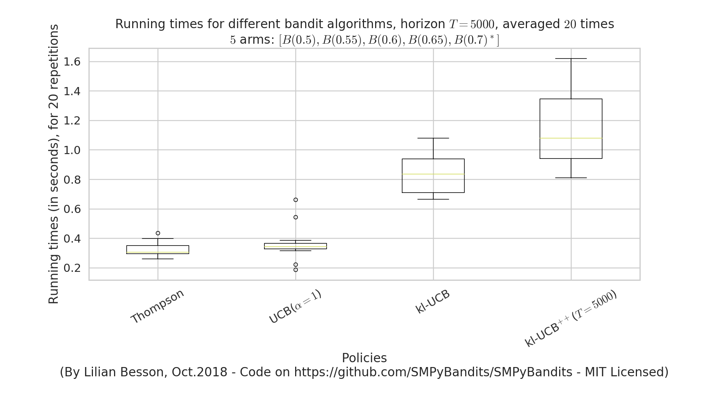

logs files¶
This folder keeps some examples of log files to show the output of the simulation scripts.
Multi players simulations¶
Example of output of the main_multiplayers.py program¶
Example of output of the main_multiplayers_more.py program¶
Linters¶
Pylint¶
- See
main_pylint_log.txtfor Python 2 (generic) linting report. - See
main_pylint3_log.txtfor Python 3 (specific) linting report.
Profilers¶
- See
main_py3_kernprof_log.txtfromkernprofprofiling. - See
main_py3_profile_log.txtfor an example of a line-by-line time profiler. - See
main_py3_memory_profiler_log.txtfor an example of a line-by-line time profiler.
Graph of time and memory consumptions¶
Time consumption¶
Note that I had added a very clean support for time consumption measures, every simulation script will output (as the end) some lines looking like this:
Giving the mean and std running times ...
For policy #0 called 'UCB($\alpha=1$)' ...
84.3 ms ± 7.54 ms per loop (mean ± std. dev. of 10 runs)
For policy #1 called 'Thompson' ...
89.6 ms ± 17.7 ms per loop (mean ± std. dev. of 10 runs)
For policy #3 called 'kl-UCB$^{++}$($T=1000$)' ...
2.52 s ± 29.3 ms per loop (mean ± std. dev. of 10 runs)
For policy #2 called 'kl-UCB' ...
2.59 s ± 284 ms per loop (mean ± std. dev. of 10 runs)

Memory consumption¶
Note that I had added an experimental support for time consumption measures, every simulation script will output (as the end) some lines looking like this:
Giving the mean and std memory consumption ...
For players called '3 x RhoRand-kl-UCB, rank:1' ...
23.6 KiB ± 52 B (mean ± std. dev. of 10 runs)
For players called '3 x RandTopM-kl-UCB' ...
1.1 KiB ± 0 B (mean ± std. dev. of 10 runs)
For players called '3 x Selfish-kl-UCB' ...
12 B ± 0 B (mean ± std. dev. of 10 runs)
For players called '3 x MCTopM-kl-UCB' ...
4.9 KiB ± 86 B (mean ± std. dev. of 10 runs)
For players called '3 x MCNoSensing($M=3$, $T=1000$)' ...
12 B ± 0 B (mean ± std. dev. of 10 runs)

It is still experimental!
Other examples¶
Example of output of a script¶
For the complete_tree_exploration_for_MP_bandits script, see the file complete_tree_exploration_for_MP_bandits_py3_log.txt.